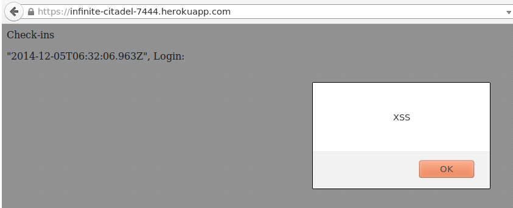

Assignment 4: Security Assessment
by Leo Choi, 12/5/14
Introduction
The product being assessed is a web application server that maintains geolocation check-ins using a Mongo database. It also provides an API that can be used to retrieve the stored data.
The assessment below provides an analysis of security issues in the app and general improvements, along with possible solutions to the problems.
Methodology
Testing was initially performed with the live site available at http://infinite-citadel-7444.herokuapp.com. I made requests to the API with my own javascript code and also used Tamper Data for Firefox to analyze requests and responses. Afterwards, I looked at the actual source code in hopes of finding further vulnerabilities in the application.
Abstract of Findings
Most of the security vulnerabilities in the application are a result of failing to check the input for correctness. Not only is this insecure because it allows malicious code to be run through the browser, but it also defeats the purpose of allowing API requests, as any data the application returns cannot be trusted.
Issues Found
1. Cross-Site Scripting
- Issue: Possible to inject scripts into the database which are then run client-side.
- Location: /sendLocation POST requests
- Severity: High. This issue allows almost any code to be run client-side upon visiting the index page, making anybody who visits the page vulnerable to attack. Since it is also stored in the database, it would also be sent to anybody who requests database data through the API.
- Description: Data sent by POST request through the /sendLocation path is not escaped, which allows JavaScript or HTML to be stored and executed when it is displayed on a client's browser. There is no sanitization of input.
- Proof of Vulnerability:
 - Resolution: This issue can be resolved by escaping user input before entering it into the database. For example, "<" and ">" can be escaped by using "<" and ">", respectively.
2. No verification of input type or value
- Issue: The latitude and longitude values are not checked on POST requests, so they are not required to even be floats. Login is also not checked to see if it is a valid login or even a string.
- Location: /sendLocation POST requests
- Severity: Medium. Since the inputs are not sanitized, it allows for vulnerabilities such as XSS as demonstrated above. Moreover, since inputs may not be valid before being stored in the database, any responses to API requests cannot be trusted, basically rendering the API useless.
- Description: After finding that the "login" parameter could be a script or HTML tag, I realized that inputs were not being checked and so it would be likely that latitude and longitude were also susceptible to gibberish input.
- Proof of Vulnerability:

- Resolution: Latitude can be verified to see if it is a float value between +90 degrees and -90 degrees. Longitude can be checked to see if it is a float value between -180 degrees and +180 degrees. Login verification is exponentially more difficult because ideally it would require user authentication to verify a person's identity. Otherwise user identitiy can not be trusted.
3. Latitude and Longitude are always equal
- Issue: The latitude and longitude are always set to the latitude parameter while longitude is ignored on POST requests.
- Location: /sendLocation POST requests
- Severity: Low. Although this is not exactly a security vulnerability, it is a huge detriment to the purpose of the server, which is to hold geolocation data.
- Description: While I was checking that latitude and longitude are not verified to be floats, I discovered that longitude was not being set to what I gave the server, but was rather being set to the latitude value.
- Proof of Vulnerability: All latitudes and longitudes are the same.
- Resolution: Resolution of this issue is extremely easy. Instead of setting longitude to "request.body.lat", it should be set to "request.body.lng".
Conclusion
The server-side web application has vulnerabilities and errors that render it both insecure and not able to perform its purpose. Smaller fixes such as escape characters and input verification are relatively easy, but to truly be secure, a user authentication system should be implemented in order to be able to trust the data. At a developer intern's hourly pay of $20/hour and an unspecified length of time, the improvements would definitely be worth the cost.